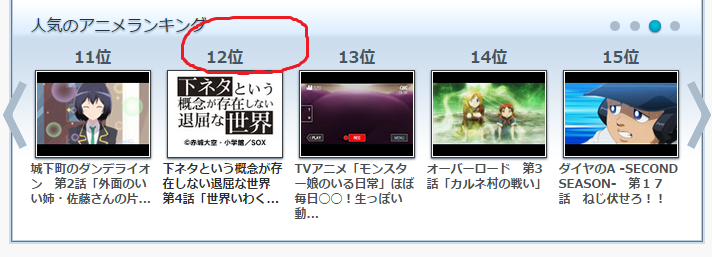
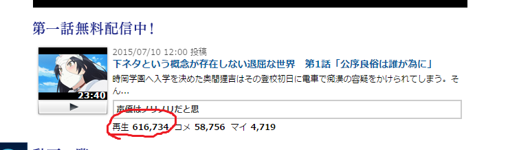
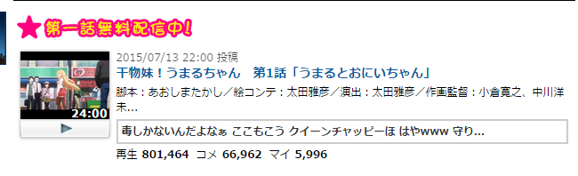

正文:
我觉得是不适宜的，因为中国人比较保守，觉得把胖次戴头上是天大的耻辱，外行人看来这些人就是疯了，被日本人洗脑了，完全不利于acg文化走向大舞台。
有人会说这些人是走在社会潮流的前线，但这种做法太极端，只会让更多人对二次元贴上低俗趣味的标签。
还有人会说，你知道coser花了多大的勇气才去出sox的cos么，你怎么能喷他们呢？
我只能说这种行为是错误的就应该批评，难道上次cos皇军的没有花很大的勇气，难道他这样做对了？cos皇军也好，cossox也好，都只是在给二次元挂丑陋低俗的标签。
最后我希望这番快点网盘见吧，否则越来越多小学生跟风，acg文化越抹越黑。
楼下
柯克兰十三观点也是挺有意思的
“其一，我们出cos首要目的是自己开心，其次才是给别人看，一起开心，注意，是一起开心。你看了不高兴，我并没有逼你看。何况给别人看首要的服务对象也并不是圈外人，是同好。”
那么说，一个暴露狂就可以在大街上裸跑？只要自己开心，你爱看不看。广场舞大妈也不应该责备，即使她们扰民了，因为这样她们开心。
“其二，中国保守，我并不知道为什么这种理由也能上榜。干脆大家都回到女人裹脚，男人大辫子的时候如何？”
这个观点你下面的评论已经反驳得很好
“其三，二次元本身就带有很强烈的暗示，难道真有人以为二次元都是白莲花？我并没有任何抹黑二次元的意思，但是你自己贴的标签，不要就以为别人都和你一样。看见内裤就贴上低俗恶俗的标签，不知道低俗恶俗的究竟是谁。真正的白莲花就和安娜一样，丝毫不懂淫猥为何物，三观扭曲。难道这就是好的了吗？”
你真的看过优秀的动画么？二次元本身带有的强烈暗示又是什么？
我给大家证明一下这番是在国内被炒热的，在niconico这番仅仅排在12位，而在国内这番的排在第一位，而且播放量比第二位差了76.8W

 感谢楼上Atu Lee补的图，说得非常好，不要在自己的圈子里看世界，要跳出圈子看世界，看看外界的人是怎么看待自己的，当局者迷
感谢楼上Atu Lee补的图，说得非常好，不要在自己的圈子里看世界，要跳出圈子看世界，看看外界的人是怎么看待自己的，当局者迷